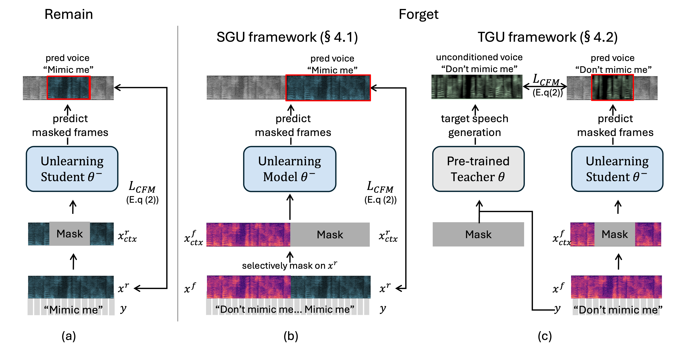

The rapid advancement of Zero-Shot Text-to-Speech (ZS-TTS) technology has enabled high-fidelity voice synthesis from minimal audio cues, raising significant privacy and ethical concerns. In particular, the ability to replicate an individual’s voice without consent poses risks, highlighting the need for machine unlearning techniques to protect voice privacy. In this paper, we introduce the first machine unlearning framework for ZS-TTS, Teacher-Guided Unlearning (TGU), designed to ensure that the model forgets designated speaker identities while retaining its ability to generate accurate speech for other speakers. Unlike conventional unlearning methods, TGU leverages randomness to prevent consistent replication of forget speakers' voices, ensuring unlearned identities remain untraceable. Additionally, we propose a new evaluation metric, speaker-Zero Retrain Forgetting (spk-ZRF), which measures the model’s effectiveness in preventing the reproduction of forgotten voices. The experiments conducted on the state-of-the-art model demonstrate that TGU prevents the model from replicating forget speakers' voices while maintaining high quality for other speakers.

| Text Prompt | Speaker Prompt | Ground Truth | VALL-E | LibriTTS Model |
|---|---|---|---|---|
| They moved thereafter cautiously about the hut groping before... | ||||
| And lay me down in thy cold bed and leave my shining lot... | ||||
| Number ten, fresh nelly is waiting on you, good night husband... |
@inproceedings{
anonymous2024do,
title={Do Not Mimic My Voice: Teacher-Guided Unlearning for Zero-Shot Text-to-Speech},
author={Anonymous},
booktitle={Submitted to The Thirteenth International Conference on Learning Representations},
year={2024},
url={https://openreview.net/forum?id=v9LjNopQ6W},
note={under review}
}